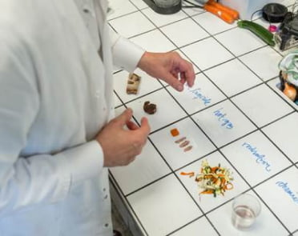
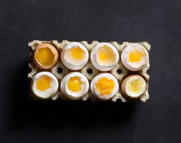
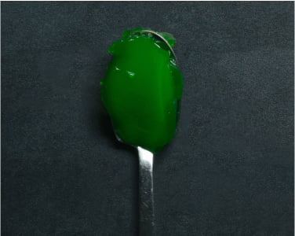
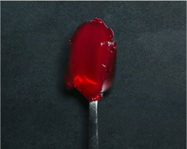
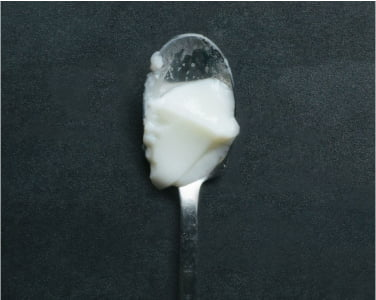

What Does Cooking Mean?
Is it simply applying heat to a food product? A way of making certain food safe to eat? Or a way to create flavour and make food more appealing? This is just part of what Hervé This, the father of molecular gastronomy, has dedicated his life to finding out. We spoke to him to find out what his experiments have told him. And in the process even discovered the secret to cooking the perfect egg...
The Perfect Egg
Keep water between 67 and 68°C for a flavourful, tender yolk
Taste the Colours

Red
Red foods remind us of berries and soft fruits, so we anticipate a sweet taste.

Green
Fresh, zingy green colours are reminiscent of unripe fruit, promising sour or acid flavours

White
White foods evoke memories of salt and salty flavours, driving the expectation of a savoury treat.